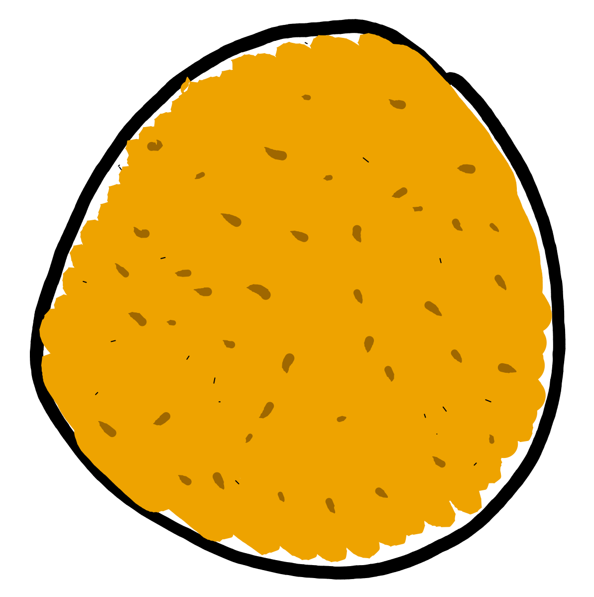

<!doctype html>
<html lang="en">

  <head>
    <meta charset="utf-8">

    <title>Practical Clojure libraries for busy backends - Clojure Finland Meetup #1</title>

    <meta name="description" content="Introducing some goodness provided by the awesome Clojure Community">
    <meta name="author" content="Fabrizio Ferrai">

    <meta name="apple-mobile-web-app-capable" content="yes" />
    <meta name="apple-mobile-web-app-status-bar-style" content="black-translucent" />

    <meta name="viewport" content="width=device-width, initial-scale=1.0, maximum-scale=1.0, user-scalable=no, minimal-ui">

    <link rel="stylesheet" href="../reveal.js/css/reveal.css">
    <link rel="stylesheet" href="../reveal.js/css/theme/night.css" id="theme">

    <!-- Printing and PDF exports -->
    <script>
      var link = document.createElement( 'link' );
      link.rel = 'stylesheet';
      link.type = 'text/css';
      link.href = window.location.search.match( /print-pdf/gi ) ? '../reveal.js/css/print/pdf.css' : '../reveal.js/css/print/paper.css';
      document.getElementsByTagName( 'head' )[0].appendChild( link );
    </script>

    <!--[if lt IE 9]>
    <script src="../reveal.js/lib/js/html5shiv.js"></script>
    <![endif]-->

    <!-- For syntax highlighting -->
	<link rel="stylesheet" href="../reveal.js/highlight.js/src/styles/solarized-light.css" id="highlight-theme">
    <link rel="stylesheet" href="https://maxcdn.bootstrapcdn.com/font-awesome/4.3.0/css/font-awesome.min.css">
  </head>

  <style type="text/css">
  .reveal pre code {
    color: #3f3f3f;
    background: #eee none repeat scroll 0% 0%;
    font-size: 1.5em;
    line-height: 1.4em;
    border-radius: .2em;
  }

  .fa {
      margin-right: 1em;
  }

  #avatar{
    box-shadow: 0 0 20px rgba(0, 0, 0, .5);
    -webkit-box-shadow: 0 0 20px rgba(0, 0, 0, .5);
    -moz-box-shadow: 0 0 20px rgba(0, 0, 0, .5);
    margin-bottom: .8em;
    width: 200px;
    height: 200px;
    border: 0px;
    border-radius: 125px;
    -webkit-border-radius: 125px;
    -moz-border-radius: 125px;
  }

  #ferrai-io {
      color: #373a3c;
      letter-spacing: -3px;
      font-size: 1em;
  }

  #subtitle {
      color: #373a3c;
      letter-spacing: -2px;
      font-size: .85em;
      margin-bottom: 3em;
  }

  .personal-links {
      display: inline-block;
      text-align: left;
  }

  .personal-links h4 {
      margin-bottom: .2em;
  }

  .personal-links h4 a {
      color: #373a3c;
      letter-spacing: -2px;
  }

  .personal-links h4 a:hover {
      color: #373a3c;
  }

  .reveal blockquote h3 {
      font-weight: 400;
  }

  .reveal h1.potty, .reveal h2.potty {
      color: black;
  }

  </style>

  <body>
    <div class="reveal">
      <!-- Any section element inside of this container is displayed as a slide -->
      <div class="slides">
        <!-- Slides are separated by newline + three dashes + newline, vertical slides identical but two dashes -->
			<section data-markdown data-separator="^\n---\n$"
			         data-separator-vertical="^\n--\n$">
				<script type="text/template">

<!-- .slide: data-background="img/bg.jpg" -->

### Finland Clojure Meetup #1

<br/><br/>

## Practical Clojure Libraries <br> for Busy Backends

#### Fabrizio Ferrai


---

<!-- .slide: data-background="img/bg.jpg" -->

# Thank you!
### [Miika](https://twitter.com/zonpantli), [Metosin](https://twitter.com/metosin), everyone here
<br />
## This is awesome.

---

<!-- .slide: data-background="#babbab" -->


## <a id="ferrai-io" href="https://ferrai.io">ferrai.io</a>

<h6 id="subtitle"> Software Engineer, Hacker, Consultant, <br> Music lover, Pythonist, Clojure disciple</h6>

<div class="personal-links">
    <h4><a href="https://twitter.com/fabferrai"><i class="fa fa-twitter"></i> @fabferrai</a></h4>
    <h4><a href="https://github.com/ff-"><i class="fa fa-github-alt"></i> github.com/ff-</a></h4>
    <h4><a href="mailto:fabrizio@ferrai.io"><i class="fa fa-envelope-o"></i> fabrizio@ferrai.io</a></h4>
</div>

--

## [slides.ferrai.io/clj-libs-pt1](https://slides.ferrai.io/clj-libs-pt1)

--


---

# Agenda

<br/>

* ### Real title of today's
* ### Real stuff, code, blablabla

---

<!-- .slide: data-background="#005b78" -->

## `Fact #1`

## Open Source is the best thing possible on the Earth.

--

# Real Today's Title
## "Thank you people that open source your stuff and take care of it in the wild because you're amazing and you save a huge amount of time to everyone and you deserve love"

---

# Why we're <br />doing this

--

<!-- .slide: data-background="#a34328" -->

## `Disclaimer #1`

## I may have opinions on things, because reasons.

--

# #meta

<br/>

## Do you have an opinion on having opinions?

--

# Question yourself

<br/>

## "Do I really need to have an opinion on this?"

--

<!-- .slide: data-background="#cc0000" -->
# NO.

--

# Real Question

<br/>

## "I need to do shit in the best way possible in the less time possible. Can I have strong opinions on something?"

--

<!-- .slide: data-background="#00aa00" -->
# YES!

# You should.
## Because time.

<br />

### (But this is only my opinion.)

---

<!-- .slide: data-background="img/meat.jpg" -->

# OK, real meat

--

## Practical, lib, busy, backend <br />= FAST STUFF

<br />

- easy to get started
- easy on the eyes
- easy to understand in context
- "squeeze that CPU"

---

# I will tell a story.

--

## Meet Backy, <br/>our little young webserver.


--

<!-- .slide: data-background="#666" -->

## OK scrap that, a potato will do.



--

<!-- .slide: data-background="#fff" -->

## "Potty" <!-- .element: class="potty" -->


--

# CODE!

TODO: minimal http-kit app

TODO: comments on the new things to do

--

<!-- .slide: data-background="#444" -->

## Our Potty is sad

- Lots of different requests
- Lots of different tasks
- Don't know how to manage something
- Needs better notes management


---

<!-- .slide: data-background="#fff" -->

# Easy persistence <!-- .element: class="potty" -->


--

# [Enduro](https://github.com/alandipert/enduro)

### Durable atoms in Clojure

---

<!-- .slide: data-background="#fff" -->

# Logging <!-- .element: class="potty" -->


--

TODO: Explain printf and Mosconi

--


--

TODO: Logging is printf debugging, but in production

--

# [Timbre](https://github.com/ptaoussanis/timbre)

### Pure Clojure/Script logging library

<br/>

(Best logging library, ever.)

---

<!-- .slide: data-background="#fff" -->

# Scheduling <!-- .element: class="potty" -->


--

## Totally partial list of Reasons for using Clojure to do cron

<br />

- Library goodies
- Application goodies
- Systemd

--

TODO: comparison of scheduling libs

Check: http://z.caudate.me/immutability-time-and-task-schedulers/

--

# [Cronj](https://github.com/zcaudate/cronj)

### A cron-inspired task scheduling library

---

<!-- .slide: data-background="#fff" -->

# Parallelizing <!-- .element: class="potty" -->


--

## "But hey, we got `pmap` right?"

--

TODO: explain why pmap is broken*

<br />

*I mean counterintuitive

--

# [Claypoole](https://github.com/TheClimateCorporation/claypoole)

### Threadpool tools for Clojure

---

<!-- .slide: data-background="#fff" -->

# Testing <!-- .element: class="potty" -->


--

## Let's face it, testing is boring.*

<br />

*but necessary

--

TODO: comparison with assertions, why it works

--

# [Truss](https://github.com/ptaoussanis/truss)

### Assertions API for Clojure/Script

---

<!-- .slide: data-background="#fff" -->

# Happy Ending <!-- .element: class="potty" -->


---

<!-- .slide: data-background="#00aa00" -->


---

# Thank you!


These slides are licensed with Creative Commons<br>
Attribution-ShareAlike 3.0 Unported

## [ferrai.io](https://ferrai.io)

          </script>
        </section>
      </div>

    </div>

    <script src="../reveal.js/lib/js/head.min.js"></script>
    <script src="../reveal.js/js/reveal.js"></script>

    <script>

    // Full list of configuration options available at:
    // https://github.com/hakimel/reveal.js#configuration
    Reveal.initialize({
      controls: true,
      progress: true,
      history: true,
      center: true,

      transition: 'slide', // none/fade/slide/convex/concave/zoom

      // Optional reveal.js plugins
      dependencies: [
        { src: '../reveal.js/lib/js/classList.js', condition: function() { return !document.body.classList; } },
        { src: '../reveal.js/plugin/markdown/marked.js', condition: function() { return !!document.querySelector( '[data-markdown]' ); } },
        { src: '../reveal.js/plugin/markdown/markdown.js', condition: function() { return !!document.querySelector( '[data-markdown]' ); } },
        { src: '../reveal.js/plugin/highlight/highlight.js', async: true, callback: function() { hljs.initHighlightingOnLoad(); } },
        { src: '../reveal.js/plugin/zoom-js/zoom.js', async: true },
        { src: '../reveal.js/plugin/notes/notes.js', async: true }
      ]
    });

  </script>

  </body>
</html>
